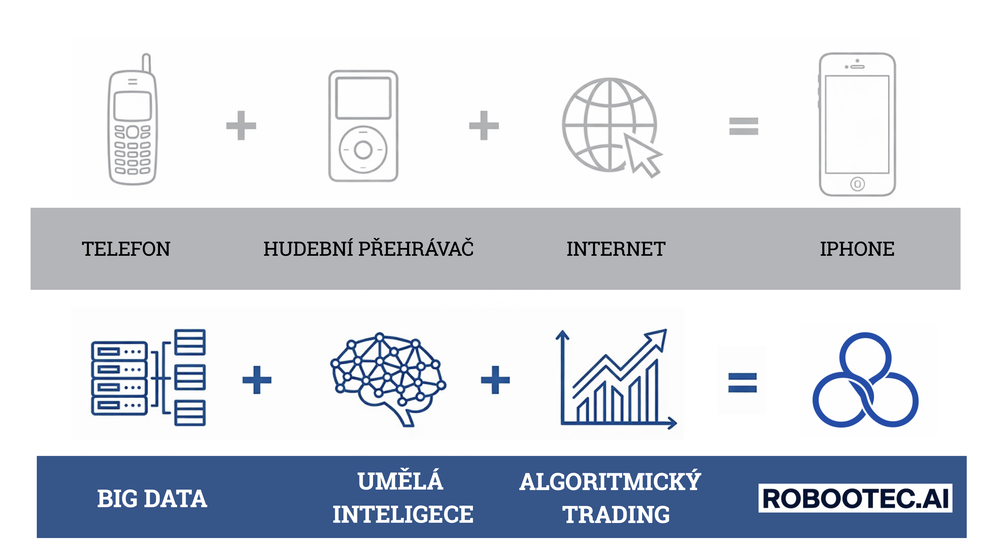

← Zpět na úvod
Slide 2 / 13

Slide 2 — Technologická revoluce
Technologické revoluce vznikají propojením
Technologické revoluce často vznikají spojením několika existujících technologií. Telefon, hudební přehrávač a internet existovaly dávno před iPhonem. Ale až jejich propojení vytvořilo úplně nový produkt. Stejný princip dnes vzniká ve financích. Spojením big data, umělé inteligence a algoritmického tradingu vzniká nová generace investičních systémů. A právě tímto směrem jde projekt ROBOOTEC.
Tady už investor jasně chápe rámec: nejde o dalšího bota, ale o novou technologickou vrstvu ve financích.